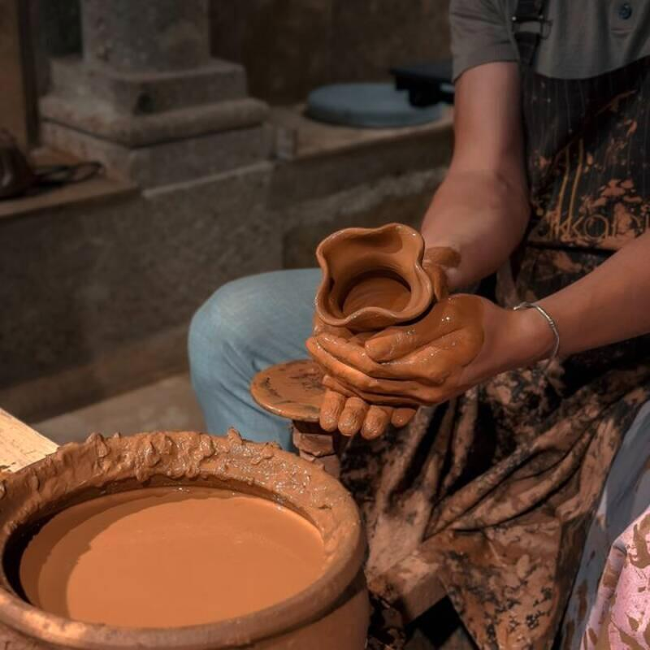

南投的土，
第十三、十四號窯
窯場設在南投，用的是當地陶土，含鐵量高、收縮率大，燒成後帶灰褐底色。 前後試過幾種外地土，最後仍回到這一批，主要是它在高溫下的裂法穩定、可以預期。
一季開兩次窯，售完即止。每一窯的窯溫、進氧與落灰位置都不同， 下一批不會與這批相同，因此不提供補貨通知，也無法指定與照片完全一致的個體。

AUTUMN FIRING No.14
木灰隨火勢落在坯體上熔成釉面，因窯內擺放位置與進氧量不同，同一窯出來的深淺各異， 偏黃者進氧較多，偏黑者屬缺氧還原。本窯共出曲頸瓶八只，頸部傾斜的角度皆不相同。
窯場設在南投，用的是當地陶土，含鐵量高、收縮率大，燒成後帶灰褐底色。 前後試過幾種外地土，最後仍回到這一批，主要是它在高溫下的裂法穩定、可以預期。
一季開兩次窯，售完即止。每一窯的窯溫、進氧與落灰位置都不同， 下一批不會與這批相同，因此不提供補貨通知，也無法指定與照片完全一致的個體。
